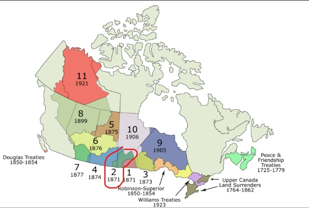

Where was Treaty 2 negotiated?
In August 1871 at the Monitoba House Fur trading post, also known as the Monitoba Post Treaty, Treaty 2 was negotiated and entered in the west shore of Lake Manitoba.
Source for information in the above paragraph
This is the map of Treaty 2 in Manitoba
Source for the map above
The green color part inside the red circle is Treaty 2 territory in Canada
Source for the map aboveWhat communities are involved in Treaty 2
- Dauphin River
- Ebb and Flow
- Keeseekoowenin
- Lake St. Martin
- Lake Manitoba
- Little Saskatchewan
- O-Chi-Chack-Ko-Sipi
- Pinaymootang
- Skownan
What are the historic tearms of Treaty 2
A significant areo of extremely valuable land to the west and north of Manitoba as it existed in 1871, and three times the provice's size, was to be "ceded,release, surrender and yield up to Her Majesty the Queen, and Her successors forever," according to the written copy of Treaty 2, which was signed by the Anishinabe. That was all the land that would probably be needed for settlement for some time to come. In return, each band would recieve a reseve big enough to give every family of five 160 acres.
Source for the information in the above paragraphWhat makes Treaty 2 different from other Treaties in Canada?
Treaty 2, signed in 1871, was the first treaty negotiated in Western Canada and contained fewer terms than future treaties. As an example, this treaty is the only one that does not specify that the signatory First Nations shall continue to have the right to hunt and fish in the treaty territory.
Source for information in the above paragraphHow is treaty 2 being implemented today?
Click here to watch how women are helping lead channge in Treaty 2 territory